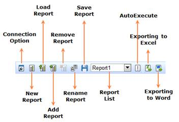

Figure 12: OLAP Client ToolBar
Table 5: OLAP Client ToolBar
|
Option |
Description |
|
Connection Option |
The connection would ask for the server name and database name, to establish the connection in order to retrieve the data from the database and from the cube for further manipulation. |
|
Create New Report |
Creates a new report, clearing the existing report in order to provide the user a new platform to have new deployment based on the existing cube elements. See also API. |
|
Load Saved Report |
The load report option picks the saved report from a location. |
|
Add a new report |
Add a report to the existing list of report. |
|
Remove the selected report |
Removes the current report from the report list. The button gets disabled if and only if the report list contains one report in it. See also API. |
|
Rename the selected report |
The rename option changes the name of the current report as per the user’s input. |
|
Save the current report |
The Save option stores the current report/reports contained in the report list in a desired location. See also API. |
|
Exporting to Excel |
This option is used to export the grid and chart data to excel format. |
|
Exporting to Word |
This option is to export the grid and chart to word format. |